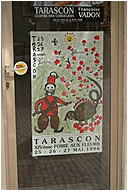

タラスコンの町は小さいながらも結構落ち着きのある、実に感じのいい町並みをしている。そんなに大きい街ではないので一回横道に入っただけでよそゆきのおめかしした通りから、なんとも生活の匂いが濃い空間へと飛び込んでしまう。道路の幅はちょうど小型の乗用車が通れるか通れないかの幅しかない。車のことなんか関係ない時代からあった道なんだろう。中世の城壁をくりぬきそのまま住居にしている家も結構多かった。でも、身の危険を感じるほど荒れているわけでもなく、タラスコンに住んでいる人たちの余裕を感じた。
ローマ帝国領であったタラスコンはローヌ川対岸のフランス王国領ボーケールと互いに監視しあっていた。ローヌ川をはさんで二つの城がにらみ合っていた訳である。15世紀に完成したタラスコンのお城は特によく保存されており、城壁の美しさはローヌ川随一といわれている。
| 1 | 城南側からの展望 | 2 | お濠 |
| 3 | 大広間 | 4 | タペストリーの間 |
| 5 | 礼拝堂 | 6 | 時計塔 |
| 7 | 屋上からの展望 | 8 | 薬局と薬草園 |

office de tourismoのお姉ちゃんは本当に親切だった。ただ、タラスコンの地図が欲しいと行っただけなのに「ここにはお城があって、ここにはソレヤードがあってetc,etc」といったかんじで、タラスコンの街にきたらどこにいって何をみればいいのか親切に教えてくれた。本当に親切な人だった。
プロヴァンスプリントの生地で有名なソレイヤードの本社、工場はここタラスコンにある。社屋はタラスコン城から歩きで10分程度のところにこじんまりとあった。ここでは、創業以来、生地のプリントに使った木型をずーっと保存しているらしい。が、工場の前で小型のブルトーザーが頑張ってお仕事していたので見ずに通り過ぎてしまった。